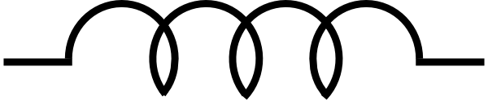
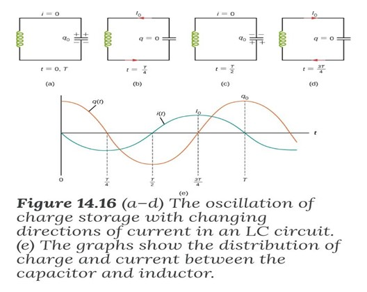
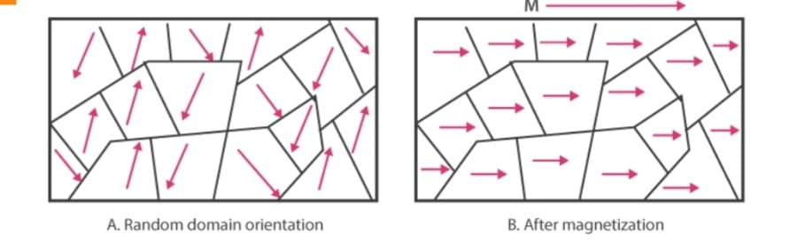
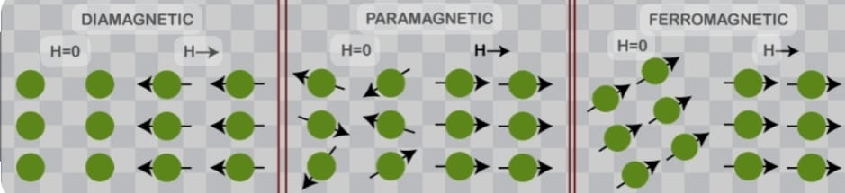
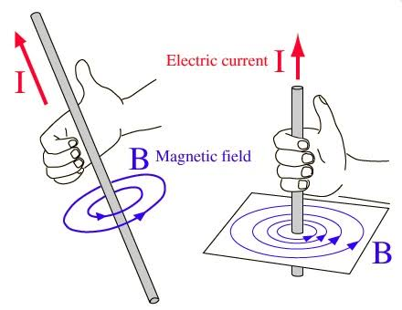
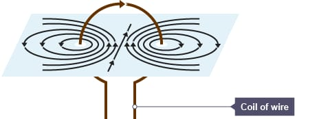
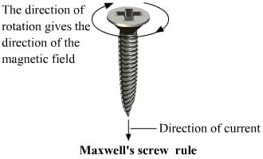
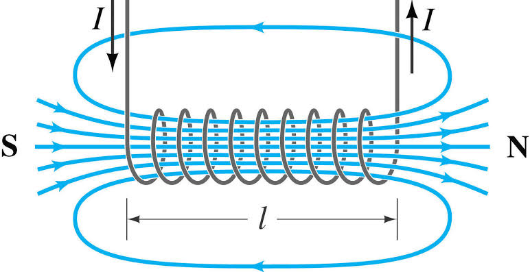
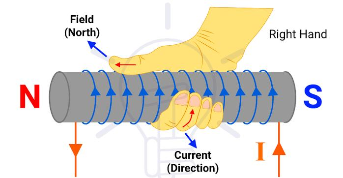
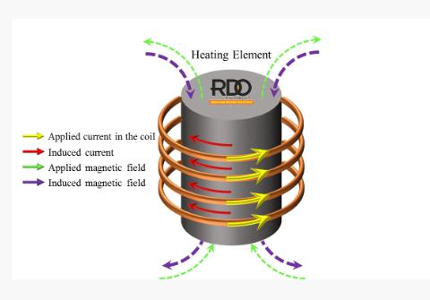

Table of content
Diode
2 - 10
Transistor
11 - 14
Inductors and Capacitors
15 - 23
LC Circuit
24 - 31
Magnetic Classification of Materials
32 - 36
Magnetic Field
37 - 44
Methods of Heating Materials
45 - 54
# Diode
Diodes are used to protect circuits by limiting the voltage and to also transform AC into DC. Semiconductors like silicon and germanium are used to make the most of the diodes. Even though they transmit current in a single direction, the way with which they transmit differs. There are different kinds of diodes and each type has its own applications.
Diode Symbol

A standard diode symbol is represented as above. In the above diagram, we can see that there are two terminals that are known as anode and cathode. The arrowhead is the anode that represents the direction of the conventional current flow in the forward biased condition. The other end is the cathode.
Diode Construction
Diodes can be made of either of the two semiconductor materials, silicon and germanium. When the anode voltage is more positive than the cathode voltage, the diode is said to be forward-biased, and it conducts readily with a relatively low-voltage drop. Likewise, when the cathode voltage is more positive than the anode, the diode is said to be reverse-biased. The arrow in the diode symbol represents the direction of conventional current flow when the diode conducts.
Types of Diodes
- Light Emitting Diode
- Laser Diode
- Avalanche Diode
- Zener Diode
- Schottky Diode
- Photodiode
- PN Junction Diode
Light Emitting Diode (LED)
When an electric current between the electrodes passes through this diode, light is produced. In other words, light is generated when a sufficient amount of forwarding current passes through it. In many diodes, this light generated is not visible as there are frequency levels that do not allow visibility. LEDs are available in different colours. There are tricolour LEDs that can emit three colours at a time. Light colour depends on the energy gap of the semiconductor used.
Laser Diode
It is a different type of diode as it produces coherent light. It is highly used in CD drives, DVDs and laser devices. These are costly when compared to LEDs and are cheaper when compared to other laser generators. Limited life is the only drawback of these diodes.
Avalanche Diode
This diode belongs to a reverse bias type and operates using the avalanche effect. When voltage drop is constant and is independent of current, the breakdown of avalanche takes place. They exhibit high levels of sensitivity and hence are used for photo detection.
Zener Diode
It is the most useful type of diode as it can provide a stable reference voltage. These are operated in reverse bias and break down on the arrival of a certain voltage. If current passing through the resistor is limited, a stable voltage is generated. Zener diodes are widely used in power supplies to provide a reference voltage.
Schottky Diode
It has a lower forward voltage than other silicon PN junction diodes. The drop will be seen where there is low current and at that stage, voltage ranges between 0.15 and 0.4 volts. These are constructed differently in order to obtain that performance. Schottky diodes are highly used in rectifier applications.
Photodiode
A photo-diode can identify even a small amount of current flow resulting from the light. These are very helpful in the detection of the light. This is a reverse bias diode and used in solar cells and photometers. They are even used to generate electricity.
P-N Junction Diode
The P-N junction diode is also known as rectifier diodes. These diodes are used for the rectification process and are made up of semiconductor material. The P-N junction diode includes two layers of semiconductors. One layer of the semiconductor material is doped with P-type material and the other layer with N-type material. The combination of these both P and N-type layers form a junction known as the P-N junction. Hence, the name P-N junction diode.
P-N junction diode allows the current to flow in the forward direction and blocks the flow of current in the reverse direction.
Characteristics of Diode
The following are the characteristics of the diode:
- Forward-biased diode
- Reverse-biased diode
- Zero biased diode
Forward-biased Diode
There is a small drop of voltage across the diode when the diode is forward-biased and the current is conducting. For silicon diodes, the forward voltage is 690mV and for germanium, 300mV is the forward voltage.
The potential energy across the p-type material is positive and across the n-type material, the potential energy is negative.
Reverse-biased Diode
A diode is said to be reverse-biased when the battery’s voltage is dropped completely. For silicon diodes, the reverse current is -20μA and for germanium, -50μA is the reverse current. The potential energy across the p-type material is negative and across the n-type material, the potential energy is positive.
Zero-biased Diode
When the diode is zero-biased, the voltage potential across the diode is zero.
Diode Applications
Following are the applications and uses of the diode:
- Diodes as a rectifier
- Diodes in the clipping circuit
- Diodes in clamping circuits
- Diodes in logical gates
- Diodes in reverse current protection
References
https://byjus.com/physics/diodes/# Transistor
A transistor Is a miniature semiconductor that regulates or controls current or voltage flow in addition amplifying and generating these electrical signals and acting as a switch/gate for them. Typically, transistors consist of three layers, or terminals, of a semiconductor material, each of whichh can carry a current.
When working as an amplifier, a transistor transforms a small input current into a bigger output current. As a switch, It can be in one of two distinct states – on or off – to control the flow of electronic signals through an electrical circuit or electronic device .
Why transistors are important
On its own, a transistor has only one circuit element. In small quantities, transistors are used to create simple electronic switches. They are the basic elements in integrated circuits (ICs), which consist of a large number of transistors interconnected with circuitry and baked into a single silicon microchip.
In large numbers, transistors are used to create microprocessors where millions of transistors are embedded into a single IC. They also drive computer memory chips and memory storage devices for MP3 players, smartphones, cameras and electronic games. Transistors are deeply embedded in nearly all ICs, which are part of every electronic device.
Transistors are also used for low-frequency, high-power applications, such as power-supply inverters that convert alternating current into direct current. Additionally, transistors are used in high-frequency applications, such as the oscillator circuits used to generate radio signals.
How transistors work
A transistor can act as a switch or gate for electronic signals, opening and closing an electronic gate many times per second. It ensures the circuit is on if the current is flowing and switched off if it isn't. Transistors are used in complex switching circuits that comprise all modern telecommunications systems. Circuits also offer very high switching speeds, such as hundreds of gigahertz or more than 100 billion on-and-off cycles per second.
Transistors can be combined to form a logic gate, which compares multiple input currents to provide a different output. Computers with logic gates can make simple decisions using Boolean algebra. These techniques are the foundation of modern-day computing and computer programs.
Transistors also play an important role in amplifying electronic signals. For example, in radio applications, like FM receivers, where the received electrical signal may be weak due to disturbances, amplification is required to provide audible output. Transistors provide this amplification by increasing the signal strength.
Types of transistors
Transistors are classified into two major types:
- Bipolar junction transistor (BJT)
- Field-effect transistor (FET)
A field-effect transistor (FET) also has three terminals -- source, drain and gate -- which are analogous to BJT's emitter, collector and base, respectively. In the FET, the n-type and p-type silicon layers are arranged differently from those of the BJT. They are also coated with layers of metal and oxide to create the metal-oxide semiconductor field effect transistor (MOSFET).
In the FET, field effect refers to an effect that enables the flow of current and switches the transistor on. Electrons can't flow from the n-type source to the drain because the p-type gate between them contains holes. But attaching a positive voltage to the gate creates an electric field that enables electrons to flow from the source to the drain. This creates the field effect, which facilitates the flow of current in the FET.
FETs are commonly used in low-noise amplifiers, buffer amplifiers and analog switches. The metal-semiconductor field-effect transistor.
References
https://www.techtarget.com/whatis/definition/transistor# Inductors and Capacitors
We introduce here the two basic circuit elements we have not considered so far: the inductor and the capacitor.
Inductors and capacitors are energy storage devices, which means energy can be stored in them. But they cannot generate energy, so these are passive devices. The inductor stores energy in its magnetic field; the capacitor stores energy in its electric field.
A Bit of Physics
The behavior of the inductor is based on the properties of the magnetic field generated in a coil of wire. In fact, the inductor is basically a coil of wire.
Ampere’s Law: current in a coil ⇒ magnetic field
Faraday’s Law: Time-varying magnetic field ⇒ induced voltage (emf)
In circuits that we will study, the time-varying magnetic field is produced by a changing current.
The behavior of the capacitor is based on the properties of the electric field created in a dielectric (non-conductor) placed between two conductors. The capacitor is basically a non-conductor sandwiched between two conductors.
The Inductor
An inductor is a passive electronic component that temporarily stores energy in a magnetic field when electric current flows through the inductor's coil
Circuit symbol
Equation
V = L × (di/dt)
- V = Voltage (volts)
- L = Value of Inductance (H)
- i = Current (A)
- t = Time taken (s)
The relationship between current and voltage involves the time derivative of the current. This is because a changing current produces a changing magnetic field, which induces a voltage.
Construction
We can make an inductor by wrapping a coil of wire around a core of magnetic material.
Modeling
Any physical device that involves a coil of wire can be modeled using inductance. An obvious example is a motor, whose windings have an inductance. More generally, a device with a current-induced magnetic field that interacts like an inductor will have inductance.
Important Points
- V = L × (di/dt) ⇒ if current is constant (NOT necessarily 0), there is no voltage. In other words, under constant current conditions, the inductor is a short.
- An instantaneous change in current would generate an infinite voltage! Therefore, we assume (and in reality this is always the case) that in an inductor, there cannot be an instantaneous change in current.
Current in terms of voltage
The current-voltage relationship we discussed above tells us the inductor voltage if we know the inductor current. But sometimes we have the inductor voltage and need to find the current, so we need to integrate…
i = (1/L) T∫0 v.dt + i0
We have integrated the voltage from an “initial” time t0 to the “final” time t (which is arbitrary). If we know the value of the current at the initial time t0, we can find the current as a function of time.
The current-voltage relationship is a first-order differential equation for the current iL(t). To solve it (meaning that we find a numerical expression for the current as a function of time) we need to know the initial condition iL(t0). This will be given, or there will be a way to find it.
Power and Energy
Not surprisingly, we will sometimes want to know about energy stored in the inductor and about power delivered to/from it. In what follows we assume passive sign convention. Here’s the analysis.
p = v . i
p = L × (di/dt) . i
p = dw/dt
Now we can integrate...
So the energy stored in an inductor that is carrying a current iL is…
W = (1/2)L . i2
The Capacitor
A capacitor is a device that stores electrical energy in an electric field by virtue of accumulating electric charges on two close surfaces insulated from each other. It is a passive electronic component with two terminals.
Circuit symbol

Equation
i = C (dv/dt)
The relationship between current and voltage involves the time derivative of the voltage. This is because a changing voltage produces a changing electric field, which induces a current.
Construction
We can make a capacitor by sandwiching an insulator between two conductors. The conductors can be metal or metallic foil, as is often used in construction of capacitors used for discrete circuit elements in the lab. It can also be an insulating material between two semiconductors, or between a metal and a semiconductor, as it is in integrated circuits.
Modeling
Any physical device that involves conducting plates or wires with insulation between them (note that air is an insulator) can be modeled using capacitance. Two wires stranded together that connect two devices will have capacitance. Semiconductor devices made from some combination of metal and semiconductor layers have capacitance.
Important Points
- i = C (dv/dt) ⇒ if voltage is constant (NOT necessarily 0), there is no current. In other words, under constant voltage conditions, the capacitor is an open circuit.
- An instantaneous change in voltage would generate an infinite current! Therefore, we assume (and in reality this is always the case) that in a capacitor, there cannot be an instantaneous change in voltage. What is meant by “instantaneous change in voltage” can be seen by looking at the graph above for instantaneous change in inductor current – just substitute vC for iL.
Units of Capacitance
(Amp . Sec) / Volt = Coul / Volt = Farad [F]
Voltage in terms of Current
The current-voltage relationship we discussed above gives the capacitor current if we know the capacitor voltage. But sometimes we have the capacitor current and need to find the voltage. So we need to integrate…
vC(t) = (1/C) T∫0 iC.dt + vC(0)
Power and Energy
We sometimes want to know about energy stored in the capacitor and about power delivered to/from the capacitor. In what follows we assume passive sign convention.
Here is the analysis.
P = vC . iC
P = vC . C (dv/dt)
P = dw/dt
Now we integrate…
So the energy stored in a capacitor that has a voltage vC across it is
W = (1/2) C . vC2
# LC Circuit
Most induction heating systems make use of an electric circuit which has very low impedance at a certain frequency. This circuit is called "Resonance circuit", is often built using passive circuit elements; an inductor, such as a coil, connected (in parallel or series) to a capacitor. Resonance circuits are called tuned circuits or tank circuits The term "tank" is derived from the fact that the capacitor and inductor both serve as storage-tank-type devices for energy, electrostatic in nature for the capacitor and electromagnetic in the case of the inductor. The action is like a tuned action, mathematically known as a harmonic oscillator, which is similar to a pendulum swinging back and forth, so the circuit is called tuned circuit. The response of the circuit to signals of different frequencies is a function of the inductance and capacitance of the circuit.
Mechanism of Energy conversion between capacitor and inductor
Let’s take a capacitor with capacitance C and an inductor with inductance L. The capacitor is fully charged with charge Qo. What we do here is to connect the capacitor and the inductor end to end.
Assuming the inductor and capacitor to be ideal (meaning resistance will be zero in the overall circuit). Initially, the capacitor C of the LC circuit carries a charge Qo and current I in the Inductor is zero. Therefore at time T = 0, the charge on the capacitor will be:
Q(T=0) = Qo => Current Flowing: I = 0
Then all the energy of the circuit is initially stored in the electric field of the capacitor This energy is Uc = (1/2) (q2/c)
At time T = t, the capacitor now begins to discharge through the inductor. The current begins to flow . Therefore the charge of the capacitor decreases, but the energy of the inductor increases. The energy gets transferred from the capacitor to the inductor. Then the relationship between the current and the charge will be: I = - (dq/dt)
The negative sign Is added because as the time passes from 0 to t the, charge on the plates of capacitor decreases i.e. charge decreases with respect to time and thus the dq/dt obtained will be negative and this is why we add a negative sign to make a current positive.
The current, in turn, creates a magnetic field in the inductor. The net effect of this process is a transfer of energy from the capacitor, with its diminishing electric field, to the inductor, with its increasing magnetic field. the capacitor is completely discharged and all the energy is stored in the magnetic field of the inductor. At this instant, the current is at its maximum value Imax and the energy in the inductor is
UL = (1/2) L . Imax2
Since there is no resistance in the circuit, no energy is lost through Joule heating; thus, the maximum energy stored in the capacitor is equal to the maximum energy stored at a later time in the inductor:
(1/2) q2/c = (1/2) L . Imax2
an arbitrary time when the capacitor charge is q(t) and the current is i(t), the total energy U in the circuit is given by
U = (1/2) q2(t)/c + (1/2) L . I2(t)
Because there is no energy dissipation in ideal form
U = (1/2) q2(t)/c + (1/2) L . I2(t) = (1/2) q2(t)/c = (1/2) L . I2(t)
After reaching its maximum I max, the current i(t) continues to transport charge between the capacitor plates, thereby recharging the capacitor. Since the inductor resists a change in current, current continues to flow, even though the capacitor is discharged. This continued current causes the capacitor to charge with opposite polarity. The electric field of the capacitor increases while the magnetic field of the inductor diminishes, and the overall effect is a transfer of energy from the inductor back to the capacitor. From the law of energy conservation, the maximum charge that the capacitor re-acquires is q°. However the capacitor plates are charged opposite to what they were initially.
When fully charged, the capacitor once again transfers its energy to the inductor until it is again completely discharged, in the last part of this cyclic process, energy flows back to the capacitor, and the initial state of the circuit is restored. This process is shown as
Damping in LC Circuit
Due to the absence of a resistor in the ideal form of the circuit, an LC circuit consumes no energy. This is unlike the ideal forms of RC circuits, RL circuits, or RLC circuits, which consume energy due to the presence of a resistor, in a practical circuit, an LC circuit will always consume some energy because of the non-zero resistance of the components and connecting wires. This means that The charge flows back and forth between the plates of the capacitor and through the inductor. So The energy oscillates between a capacitor and an inductor until the internal resistance of the components and connecting wires makes the oscillations die out. The oscillations are then said to be “damped” with the amount of damping being determined by the quality or Q-factor of the circuit The ratio of inductive reactance to the resistance of the circuit is sometimes called the quality factor, or Q
(Q= XL/R = 2πfL/R), which Offers a comparison between the total energy in a tuned circuit and the energy dissipated by the resistance in a circuit.
To ensure that the signal will not die out, It is a must to use an AC power supply.
There are essentially six different types of power supplies for induction heating applications, each designed to supply ac power within a given fre- quency range. These six types are line-frequency supplies, frequency mul- tipliers, motor-generators, solid-state (static) inverters, spark-gap converters, and radio-frequency (RF) power supplies. At the present time, the spark-gap oscillator is no longer in use, and the solid-state power supply has all but replaced the motor-generator. The ranges of frequencies and power ratings presently available are summarized in the following Fig.
# Magnetic Classification of Materials
There are various kinds of magnetism, out of which ferromagnetism is the strongest type. Ferromagnetic materials are those materials which exhibit a spontaneous net magnetization at the atomic level, even in the absence of an external magnetic field.
When placed in an external magnetic field, ferromagnetic materials are strongly magnetized in the direction of the field. Ferromagnetic materials are strongly attracted to a magnet. These materials will retain their magnetization for some time even after the external magnetizing field is removed. This property is called hysteresis.
Causes of Ferromagnetism
In a ferromagnetic material in the unmagnetized state, atomic dipoles in small regions called domains are aligned in the same direction. The domains exhibit a net magnetic moment even in the absence of an external magnetizing field.
However, the magnetic moments of neighbouring domains are oriented in opposite directions. They cancel out and therefore the net magnetic moment of the material is zero. On applying external magnetic field these domains all align themselves in the direction of the applied field. In this way, the material is strongly magnetized in a direction parallel to the magnetizing field.
Paramagnetism
Paramagnetism is due to the presence of unpaired electrons in the material, so most atoms with incompletely filled atomic orbitals are paramagnetic, although exceptions such as copper exist. Due to their spin, unpaired electrons have a magnetic dipole moment and act like tiny magnets. An external magnetic field causes the electrons' spins to align parallel to the field, causing a net attraction. Paramagnetic materials include aluminium, oxygen, titanium, and iron oxide (FeO). Therefore, a simple rule of thumb is used in chemistry to determine whether a particle (atom, ion, or molecule) is paramagnetic or diamagnetic:[3] if all electrons in the particle are paired, then the substance made of this particle is diamagnetic; if it has unpaired electrons, then the substance is paramagnetic.
Unlike ferromagnets, paramagnets do not retain any magnetization in the absence of an externally applied magnetic field because thermal motion randomizes the spin orientations. (Some paramagnetic materials retain spin disorder even at absolute zero, meaning they are paramagnetic in the ground state, i.e. in the absence of thermal motion.) Thus the total magnetization drops to zero when the applied field is removed. Even in the presence of the field there is only a small induced magnetization because only a small fraction of the spins will be oriented by the field. This fraction is proportional to the field strength and this explains the linear dependency. The attraction experienced by ferromagnetic materials is non-linear and much stronger, so that it is easily observed, for instance, in the attraction between a refrigerator magnet and the iron of the refrigerator itself.
Diamagnetism
Diamagnetic materials are repelled by a magnetic field; an applied magnetic field creates an induced magnetic field in them in the opposite direction, causing a repulsive force. In contrast, paramagnetic and ferromagnetic materials are attracted by a magnetic field. Diamagnetism is a quantum mechanical effect that occurs in all materials; when it is the only contribution to the magnetism, the material is called diamagnetic. In paramagnetic and ferromagnetic substances, the weak diamagnetic force is overcome by the attractive force of magnetic dipoles in the material. The magnetic permeability of diamagnetic materials is less than the permeability of vacuum, μ0. In most materials, diamagnetism is a weak effect which can be detected only by sensitive laboratory instruments, but a superconductor acts as a strong diamagnet because it repels a magnetic field entirely from its interior.
# Magnetic Field
A magnetic field is an invisible force field created by a magnet or as a consequence of the movement of electric charges (flow of electricity).
The magnitude (intensity) of a magnetic field is usually measured Tesla (T or in mT), but it can also be measured in Gauss (G).
A magnetic field can be generated by conducting an electric current in a wire, a circular coil, or a spiral coil.
The magnetic field due to current flowing through a wire
When a current flows in a wire, it creates a circular magnetic field around the wire. This magnetic field can deflect the needle of a magnetic compass. The strength of the magnetic field is greater closer to the wire, and increases if the current increases.
B ∝ I
B ∝ 1/d
B ∝ I/d
B = constant . I/d
B = μ0I/2πr
to determine the direction of the magnetic field around a Current - Carrying wire , we use what is called the right hand rule " this rule states that if we Point the thumb of our right hand in the direction of the current in a straight wire, the direction of our fingers Curl ( Say to grip something ) is the direction of the magnetic field around the wire This method applies for wires Carrying Current.
The magnetic field due to current flowing through a circular coil.
The magnetic field lines due to current through a circular loop is shown in the figure given below.
~ The magnetic field lines are concentric circles at every Point of a Current - Carrying circular loop .
~ The magnetic field lines are straight at the center of the loop and the lines of force are in the same direction .
~ The magnetic field lines at the Center of the loop are Perpendicular to the Plane of the loop carrying current .
~ At the center of the loop, the intensity of the magnetic field is maximum while the magnetic field intensity decreases as we move away from the Center of the loop.
~ Each segment of the circular loop Carrying Current Produces magnetic field lines in the same direction within the loop .
~ to determine the direction of the magnetic field of every section of the circular loop we use " Right-hand screw rule "
When an screw is rotated with the right hand in the direction of attachment (clockwise direction) at the center of the coil so that the direction of its rotation indicates the direction of the magnetic flux and the direction of its impulse indicates the direction of the current.
factors affecting the strength of the magnetic field :
- The magnitude of the magnetic field is directly proportional to the magnitude of current through the loop B α I. Therefore, the higher the current passed through the circular wire, the more iron filings align with the magnetic field circular line indicating an increase in the intensity of the magnetic field on increasing the current.
- The magnitude of the magnetic field is inversely Proportional to the radius of the circular loop B α 1 / r. Thus, when the radius of the circular loop is increased, less number of iron filings are aligned in the direction of the magnetic field, this indicates that with an increase in the radius of the circular wire conductor, the intensity of the magnetic field decreases.
- The magnitude of the magnetic field also depends upon the number of turns in the Cullent-Carrying loop. the larger the number of turns, the higher the. magnitude of the magnetic field.
The magnetic field due to current flowing through a spiral coil.
The magnetic field lines due to current through a spiral coil is shown in the figure given below.
when an electric current is Passed through (a long spiral or clindrical cail ) , there is resultant magnetic field it is very Similar to that as a bar magnet.
Inside the spiral it is Parallel , straight and uniform lines.
lines are Parallel to the axis.
The magnetic field density in the interior of a Spiral Carrying an electric current depends on:
- the current intensity Passing through the Coil B α I
- the number of turns Per unit length B α n , n=N/L where L is the length of the spiral coil.
to determine the direction of the magnetic field we use" Right - hand screw rule "
References
http://hyperphysics.phy-astr.gsu.edu › ... Magnetic Field of a Current Loop - Hyperphysics https://www.teachoo.com › Concepts Magnetic field due to a Current through a Circular Loop - Class 10 https://flexbooks.ck12.org › lesson Magnetic Field due to Current Carrying Circular Loop | CK-12 ... https://ec.europa.eu › glossary › mno Glossary: Magnetic field# Methods of Heating Materials
Heat is the transfer of kinetic energy from one medium or object to another, or from an energy source to a medium or object.
Heating by conduction
Heat conduction is a transfer mode caused by a temperature difference between two parts of the same medium , or between two materials in contact, occurs without global motion of matter contrary to the transfer mode by convection.
The propagation of heat by conduction inside body takes place according to two distinct mechanisms:
- by transmission of the vibration of the atoms or molecules.
- and if it is in a metal, by transmission of thermal energy by free electrons.
Heat transfer by conduction is modeled by Fourier's law which is expressed as Q=-ks▽T.n
( Where k is the heat conduction coefficient, s is the surface, ▽T is the temperature gradient and n is the flux direction)
Heating by radiation
The absorption of thermal radiation alters the temperature of the material of the material, which can be manifested as a change in thermistor resistance, the development of an emf as thermocouple, or a change in the dipole moment of a ferroelectric Crystal as the pyroelectric detector.
Source ( from:- « principals of Measurment and transduction of Biomedical Variables, 2015»)Heating by induction
What is induction heating?
Induction heating is a process for heating metals and other electrically conductive materials that is precise repeatable and a safe non-contact method.
it involves a complex combination of electromagnetic energy and heat transfer that passes through an induction coil creating an electromagnetic field within the coil to metal down materials.
Two keys phenomena must be learned to understand the fundamentals of induction heating:
- Faradays law of induction.
- Skin effect.
Faraday's law of induction
when an electrically conducting material ( such as a metal) is placed within a time-varying magnetic field, an electric current (called «eddy current») is induced in the part producing a second magnetic field which opposes the applied field. The reason behind this phenomenon is that a time-varying magnetic field disturbs the relaxed environmental condition of the electrically conducting material. in return, the material tries to oppose this change by producing another magnetic field to cancel the imposed field
How does induction heating work?
Induction phenomenon has two important consequences:
- Induced Force:- when a permanent magnet is dropped into a copper tube, the induced force according to Faraday's law tries to stop the magnet's motion inside the tube.
- Induced Heat:- when an electrically conductive material is exposed to an alternating magnetic field, depending on the material, heat is induced by two mechanisms ( Joule heating and magnetic Hysteresis) . The latter occurs in the magnetic metals (such as carbon steel below curie temperature) in which the rotation of the adjacent magnetic dipoles due to the direction change of the imposed magnetic field will lead into friction and heat , this effect increases by increasing the frequency of the imposed magnetic field.
Joule heating:- is the main heat effect caused by induction phenomenon. any current i.e ac or dc , passes through an electrically conducting material causes voltage drop V resulting in energy conversion to heat.
Heat power is defined by VI = RI^2 , where R is the electrical resistance of the current path is inversely proportional to the cross -section area in which the current is flowing.
How is the induced heat generated?
If an electrically conducting material is exposed to a magnetic field, eddy current are induced in the material. Special characteristics of such currents result in a phenomenon which we call "induction heat" . The eddy currents are concerned at the surface of the material, the reason is that at high frequency, the imposed magnetic field changes it's direction very fast. Therefore, the induced current in one direction don't have enough time to penetrate into the depth of the metal before their time is up. The thickness of the current penetration in the material is called "skin depth" . Skin depth depends on the electromagnetic properties of the material and also is inversely proportional to the frequency.
Using high frequencies in induction heating industry ( mainly 10kHz to 700kHz) implies very thin penetration depth in metals (typically less than 1mm). Passing high current density (big 1) through that shallow depth (big R) results in high RI^2 . Consequently, high energy conversion from electrical to heat occurs.
Source ( S.Zinn and S.L. Semiatin , "Elements of induction Heating, Design, Control and Applications " , ASM international , ISBN - 13: 97808717030881988)Eddy currents
Eddy currents are loops of electrical current induced within conductors by a changing magnetic field in the conductor according to the Faraday's law of induction.
Eddy currents flow in closed loops within conductors, in planes perpendicular to the magnetic field.
Eddy currents -based methods measure a material's response to electromagnetic field over a specific frequency range, typically a few Hz to several MHz
The principal of any EC(eddy current) is a magnetic coil with alternating current induces a time-varying magnetic field that causes an electric current to be generated in the test object.
These currents produce small magnetic field around the material which, by opposing the original field, change the impedance of the magnetic coil.
Source ( P. R. zzo , in " Senor Technologies for Civil in Frastructures " , 2014)Eddy currents phenomenon is commonly used as an evaluation technique for different purposes such as:
- Flow detection.
- Thickness measurements.
- Corrosion evaluation.
- Magnetic permeability measurements.
- Electrical conductivity measurements.